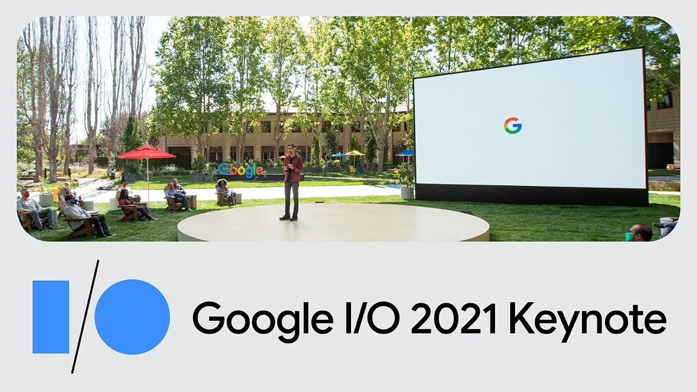

TECHZHA
Google I/O 2021 :Playing some catchup whilist doing some awesome AI stuff.
- Project LaMDA looks really interesting, especially multimodal modals. But as with all AI it regulated and used in an ethical manner.
- All the Google Maps features felt like the ones we are already using lol. But indoor AR live maps view, using ML to show relevant places at relevant times and Area busyness is cool. Providing the most fuel efficient route may seem like a small thing but at the scale Google Maps operates it is very impactful in reducing carbon emissions!
- Chrome showing us pending carts from “past couple of weeks” is creepy AF 😂 finding promotions and discounts is nice though.
- Little patterns Google photos feature is a little ML powered pet project kinda thing. Cinematic Photos which uses Neural Networks to generate frames between two similar photos is nice.
- Making the camera represent people of color accurately is a much welcome effort.
- Material You UI refresh looks very weird. Especially the stuff they showed on screen. It’s a bold change though. Let’s wait and see how it turns out.
- Really appreciate all the privacy features despite them doing this out of anti trust hearing pressure and competitive pressure from Apple.😂
- Camera, mic privacy control and digital car keys implemented just like iOS😂.
- Speaking of similar to iOS they are finally playing catch-up to the iOS continuity feature from 2014 after 7 years !!! (Microsoft did it in 6)
- Google and Samsung joining hands to create a better Wear OS to compete with the Apple Watch.
- Always appreciate the efforts in moving towards renewable energy and green energy. Google exploring Geo Thermal energy is interesting. Also Project Starline is very interesting and when the mute person said it was realistic in sign language it was emotional.
#GoogleIO2021
22 MAY 2021
Go Back Home